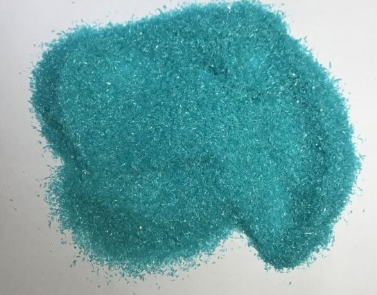
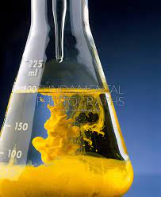

Precipitation Reactions
The reaction between two compounds in aqueous state to give two new compounds out of which one is a precipitate is known as precipitation reaction.
This is used in analytical chemistry for identifying the positive radical in a salt.
Major Precipitation reactions
-
1. Iron Sulphate and Sodium Hydroxide


FeSO4 (aq) + NaOH (aq) = Fe(OH)2 + Na2SO4
First add NaOH in drops and observe, then add NaOH in excess and observe...
Observations
1. A dirty green precipitate is obtained which is insoluble in excess NaOH.
2. The dirty green precipitate is Fe(OH)2
-
2. Ferric Chloride and Sodium Hydroxide
FeCl3 (aq) + NaOH (aq) = Fe(OH)3 + NaCl
First add NaOH in drops and observe, then add NaOH in excess and observe...
Observations
1. A reddish brown precipitate is obtained which is insoluble in excess NaOH.
2. The reddish brown precipitate is Fe(OH)3
-
3. Copper Sulphate and Sodium Hydroxide

CuSO4 (aq) + NaOH (aq) = Cu(OH)2 + Na2SO4
First add NaOH in drops and observe, then add NaOH in excess and observe...
Observations
1. A pale blue precipitate is obtained which is insoluble in excess NaOH.
2. The pale blue precipitate is Cu(OH)2
-
4. Zinc Sulphate and Sodium Hydroxide
ZnSO4 (aq) + NaOH (aq) = Zn(OH)2 + Na2SO4
First add NaOH in drops and observe, then add NaOH in excess and observe...
Observations
1. When, drops of NaOH is added to ZnSO4, a gelatinous white precipitate is obtained.
2. When, NaOH is added in excess to ZnSO4, the gelatinous white precipitate dissolves in it.
3. A gelatinous white precipitate is obtained which is "soluble" in excess NaOH.
4. The gelatinous white precipitate is Zn(OH)2
-
5. Lead Nitrate and Sodium Hydroxide

Pb(NO3)2 (aq) + NaOH (aq) = Pb(OH)2 + NaNO3
First add NaOH in drops and observe, then add NaOH in excess and observe...
Observations
1. When, drops of NaOH is added to Pb(NO3)2, a chalky white precipitate is obtained.
2. When, NaOH is added in excess to Pb(NO3)2, the chalky white precipitate dissolves in it.
3. A chalky white precipitate is obtained which is "soluble" in excess NaOH.
4. The chalky white precipitate is Pb(OH)2
-
6. Barium Chloride and Sodium Sulphate
BaCl2 (aq) + Na2SO4 (aq) = BaSO4 + NaCl
Observations
1. A white precipitate is obtained which is insoluble in dilute HCl.
2. The white precipitate is BaSO4
Imp :- This reaction is applicable for any sulphate.
-
7. Lead Nitrate and dil. Hydrochloric acid
Pb(NO3)2 (aq) + dil.HCl = PbCl2 + HNO3
Observations
3. A white precipitate is obtained which dissloves in hot water and reappears on cooling.
4. The white precipitate is PbCl2
-
7. Silver Nitrate and dil. Hydrochloric acid
AgNO3 (aq) + dil.HCl = AgCl + HNO3
Observations
3. A curdy white precipitate is obtained which is "insoluble" in HNO3 but "soluble" in excess of NH4OH
4. The curdy white precipitate is AgCl